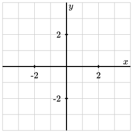

Skip to main content
Contents Embed Dark Mode Prev Up Next \(\newcommand{\avec}{{\mathbf a}}
\newcommand{\bvec}{{\mathbf b}}
\newcommand{\cvec}{{\mathbf c}}
\newcommand{\dvec}{{\mathbf d}}
\newcommand{\dtil}{\widetilde{\mathbf d}}
\newcommand{\evec}{{\mathbf e}}
\newcommand{\fvec}{{\mathbf f}}
\newcommand{\nvec}{{\mathbf n}}
\newcommand{\pvec}{{\mathbf p}}
\newcommand{\qvec}{{\mathbf q}}
\newcommand{\svec}{{\mathbf s}}
\newcommand{\tvec}{{\mathbf t}}
\newcommand{\uvec}{{\mathbf u}}
\newcommand{\vvec}{{\mathbf v}}
\newcommand{\wvec}{{\mathbf w}}
\newcommand{\xvec}{{\mathbf x}}
\newcommand{\yvec}{{\mathbf y}}
\newcommand{\zvec}{{\mathbf z}}
\newcommand{\rvec}{{\mathbf r}}
\newcommand{\mvec}{{\mathbf m}}
\newcommand{\zerovec}{{\mathbf 0}}
\newcommand{\onevec}{{\mathbf 1}}
\newcommand{\real}{{\mathbb R}}
\newcommand{\complex}{{\mathbb C}}
\newcommand{\integer}{{\mathbb Z}}
\newcommand{\poly}{{\mathbb P}}
\newcommand{\field}{{\mathbb F}}
\newcommand{\twovec}[2]{\left[\begin{array}{r}#1 \\ #2
\end{array}\right]}
\newcommand{\ctwovec}[2]{\left[\begin{array}{c}#1 \\ #2
\end{array}\right]}
\newcommand{\threevec}[3]{\left[\begin{array}{r}#1 \\ #2 \\ #3
\end{array}\right]}
\newcommand{\cthreevec}[3]{\left[\begin{array}{c}#1 \\ #2 \\ #3
\end{array}\right]}
\newcommand{\fourvec}[4]{\left[\begin{array}{r}#1 \\ #2 \\ #3 \\ #4
\end{array}\right]}
\newcommand{\cfourvec}[4]{\left[\begin{array}{c}#1 \\ #2 \\ #3 \\ #4
\end{array}\right]}
\newcommand{\fivevec}[5]{\left[\begin{array}{r}#1 \\ #2 \\ #3 \\
#4 \\ #5 \\ \end{array}\right]}
\newcommand{\cfivevec}[5]{\left[\begin{array}{c}#1 \\ #2 \\ #3 \\
#4 \\ #5 \\ \end{array}\right]}
\newcommand{\mattwo}[4]{\left[\begin{array}{rr}#1 \amp #2 \\ #3 \amp #4 \\ \end{array}\right]}
\newcommand{\laspan}[1]{\text{Span}\{#1\}}
\newcommand{\bcal}{{\cal B}}
\newcommand{\ccal}{{\cal C}}
\newcommand{\dcal}{{\cal D}}
\newcommand{\scal}{{\cal S}}
\newcommand{\wcal}{{\cal W}}
\newcommand{\ecal}{{\cal E}}
\newcommand{\fcal}{{\cal F}}
\newcommand{\coords}[2]{\left\{#1\right\}_{#2}}
\newcommand{\gray}[1]{\color{gray}{#1}}
\newcommand{\lgray}[1]{\color{lightgray}{#1}}
\newcommand{\rank}{\operatorname{rank}}
\newcommand{\row}{\text{Row}}
\newcommand{\col}{\text{Col}}
\renewcommand{\row}{\text{Row}}
\newcommand{\nul}{\text{nul}}
\newcommand{\range}{\text{range}}
\newcommand{\var}{\text{Var}}
\newcommand{\corr}{\text{corr}}
\newcommand{\len}[1]{\left|#1\right|}
\newcommand{\bbar}{\overline{\bvec}}
\newcommand{\bhat}{\widehat{\bvec}}
\newcommand{\bperp}{\bvec^\perp}
\newcommand{\xhat}{\widehat{\xvec}}
\newcommand{\vhat}{\widehat{\vvec}}
\newcommand{\uhat}{\widehat{\uvec}}
\newcommand{\what}{\widehat{\wvec}}
\newcommand{\Sighat}{\widehat{\Sigma}}
\newcommand{\basis}[2]{#1_1,#1_2,\ldots,#1_#2}
\newcommand{\inner}[2]{\langle #1, #2\rangle}
\newcommand{\conj}[1]{\overline{#1}}
\newcommand{\lt}{<}
\newcommand{\gt}{>}
\newcommand{\amp}{&}
\definecolor{fillinmathshade}{gray}{0.9}
\newcommand{\fillinmath}[1]{\mathchoice{\colorbox{fillinmathshade}{$\displaystyle \phantom{\,#1\,}$}}{\colorbox{fillinmathshade}{$\textstyle \phantom{\,#1\,}$}}{\colorbox{fillinmathshade}{$\scriptstyle \phantom{\,#1\,}$}}{\colorbox{fillinmathshade}{$\scriptscriptstyle\phantom{\,#1\,}$}}}
\)
Worksheet Introduction to linear systems
This course is about
linear equations . An example of a linear equation is
\(2x + 3y = -1\text{.}\) Notice that variables are not squared or multiplied together; the equation is just formed by multiplying the variables by coefficients and adding. The equation
\(\sin(e^x+y) = 10\) is not linear.
1.
To get started, let’s begin with a single linear equation
\begin{equation*}
y = x+1\text{.}
\end{equation*}
(a) Plot the solutions to this equation below. What can you say about the number of points
\((x,y)\) that satisfy this equation?

A coordinate grid and set of axes. Both the horizontal and vertical axes runs from negative four to positive four.
(b)
Now we’ll add another equation so that we’re considering a system of two linear equations:
\begin{equation*}
\begin{aligned}
y \amp = x+1 \\
y \amp = x-1\text{.} \\
\end{aligned}
\end{equation*}
Plot the two lines below. How many points
\((x,y)\) satisfy both equations?
A coordinate grid and set of axes. Both the horizontal and vertical axes runs from negative four to positive four.
(c)
Here’s another system. Plot the two lines and determine how many points \((x,y)\) satisfy both equations.
\begin{equation*}
\begin{aligned}
y \amp = x+1 \\
y \amp = 2x-1\text{.} \\
\end{aligned}
\end{equation*}
A coordinate grid and set of axes. Both the horizontal and vertical axes runs from negative four to positive four.
(d)
Here’s a system of three equations.
\begin{equation*}
\begin{aligned}
y \amp = x+1 \\
y \amp = 2x-1 \\
y \amp = -x.
\end{aligned}
\end{equation*}
Create the plot and determine the number of points that satisfy all three equations.
A coordinate grid and set of axes. Both the horizontal and vertical axes runs from negative four to positive four.
2. Circle the possibilities below:
Given a system of linear equations, what are the possibilities for the number of points that satisfy all the equations:
\begin{equation*}
0 \hspace{0.5in} 1 \hspace{0.5in} 2 \hspace{0.5in} 3
\hspace{0.5in} 4 \hspace{0.5in} 5 \hspace{0.5in}
\ldots \hspace{0.5in} \infty
\end{equation*}
Generally speaking, as we add more equations, what happens to the number of solutions?
3.
Instead of graphing, let’s try to determine the solutions to a system of linear equations algebraically.
\begin{equation*}
\begin{aligned}
x + 2y \amp = -1 \\
2x - y \amp = 8
\end{aligned}
\end{equation*}
To do this, solve the first equation for \(x\) and substitute it into the second equation. The resulting equation only depends on \(y\) so you should be able to solve it in the usual way.
4. For the following linear systems, determine the number of solutions. If there is exactly one solution, state what that solution is, such as
\((x,y,z)=(1,-3,4)\text{.}\)
(a)
\begin{equation*}
\begin{alignedat}{4}
x \amp {} {} \amp \amp {}{} \amp \amp {}={} \amp -3 \\
\amp \amp y \amp {}{} \amp \amp {}={} \amp 2 \\
\amp \amp \amp \amp z \amp {}={} \amp 4. \\
\end{alignedat}
\end{equation*}
(b)
\begin{equation*}
\begin{alignedat}{4}
\amp \amp y \amp {}{} \amp \amp {}={} \amp 2 \\
\amp \amp \amp \amp z \amp {}={} \amp 4 \\
x \amp {} {} \amp \amp {}{} \amp \amp {}={} \amp -3.
\end{alignedat}
\end{equation*}
(c)
\begin{equation*}
\begin{alignedat}{4}
2x \amp {} {} \amp \amp {}{} \amp \amp {}={} \amp 4 \\
\amp \amp -3y \amp {}{} \amp \amp {}={} \amp 3 \\
\amp \amp \amp \amp -z \amp {}={} \amp 1. \\
\end{alignedat}
\end{equation*}
(d)
\begin{equation*}
\begin{alignedat}{4}
-x \amp {} + {} \amp 2y \amp {}-{} \amp z \amp {}={} \amp -3 \\
\amp \amp 3y \amp {}+{} \amp z \amp {}={} \amp -1 \\
\amp \amp \amp \amp 2z \amp {}={} \amp 4. \\
\end{alignedat}
\end{equation*}
(e)
\begin{equation*}
\begin{alignedat}{4}
x \amp {}+{} \amp 2y \amp {}+{} \amp z \amp {}={} \amp 4 \\
\amp \amp y \amp {}-{} \amp 3z \amp {}={} \amp 11 \\
\end{alignedat}
\end{equation*}
(f) (g) (h) 5.
Consider the following system of linear equations and follow these directions carefully:
\begin{equation*}
\begin{alignedat}{4}
x \amp {}+{} \amp 2y \amp \amp \amp {}={} \amp 4 \\
2x \amp {}+{} \amp y \amp {}-{} \amp 3z \amp {}={} \amp 11 \\
\end{alignedat}
\end{equation*}
Solve the first equation for \(x\) and substitute it into the second equation. Then write the new system of equations that results.
Notice how we wrote the equations with the variables arranged in columns. As a shorthand, we will record the system of equations in an augmented matrix . For instance, the original set of two equations can be written as
\begin{equation*}
\left[ \begin{array}{ccc|c} 1 \amp 2 \amp 0 \amp 4 \\ 2 \amp 1 \amp -3 \amp 11 \\ \end{array}\right]
\end{equation*}
Each row corresponds to an equation, the vertical bar represents the equals sign, and each column left of the bar corresponds to a variable. Write the augmented matrix for the system you found after solving for \(x\) and substituting it into the second equation.
In terms of augmented matrices, the process of solving for
\(x\) and substituting into the second equation can be more easily performed by multiplying the first row of the augmented matrix by
\(-2\) and adding it to the second row (this changes only the second row). Verify that this results in the same augmented matrix you found above. How do you see that
\(x\) has been eliminated from the second equation?
This process is called a
row replacement operation. We can also
interchange two rows, which corresponds to writing the equations in a different order, and
scale a row by multiplying it by a nonzero number.
Make sure you can answer the following questions:
What is a linear equation and what is a system of linear equations?
What are the three possibilities for the number of solutions to a system of linear equations?
How does this number of solutions typically change as we add more equations?
What is an augmented matrix and how does it represent a system of linear equations?
What are three operations we can perform on an augmented matrix without changing the solution?